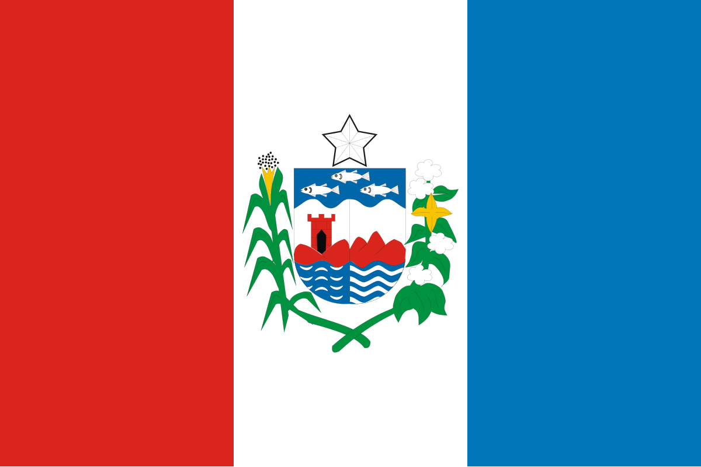
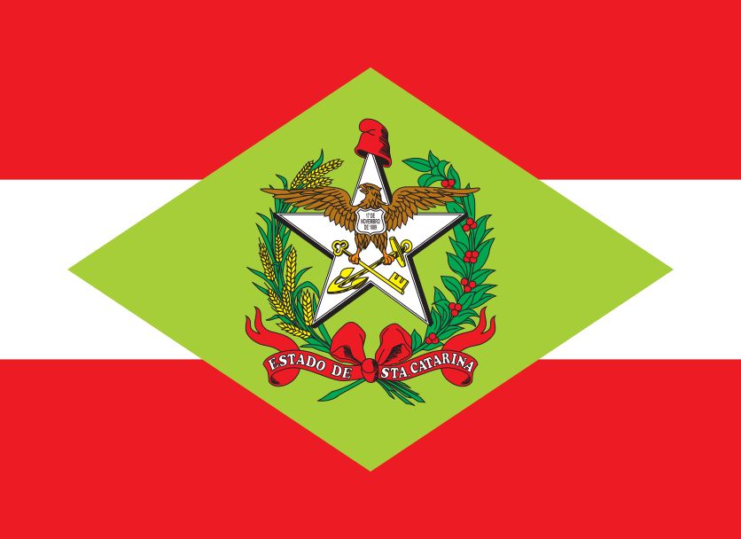

| Estado | População | Capital | Região | Bandeira |
|---|---|---|---|---|
| Acre | 880.631 | Rio Branco | Norte | |
| Alagoas | 3.127.683 | Maceió | Nordeste |  |
| Amapá | 733.759 | Macapá | Norte | |
| Amazonas | 4.281.209 | Manaus | Norte | |
| Bahia | 14.141.626 | Salvador | Nordeste | |
| Ceará | 9.233.656 | Fortaleza | Nordeste | |
| Espírito Santo | 4.102.129 | Vitória | Sudeste | |
| Goiás | 7.056.495 | Goiânia | Centro-Oeste | |
| Maranhão | 6.775.152 | São Luís | Nordeste | |
| Mato Grosso | 3.658.813 | Cuiabá | Centro-Oeste | |
| Mato Grosso do Sul | 2.901.895 | Campo Grande | Centro-Oeste | |
| Minas Gerais | 20.539.989 | Belo Horizonte | Sudeste | |
| Pará | 8.817.743 | Belém | Norte | |
| Paraíba | 4.059.905 | João Pessoa | Norte | |
| Paraná | 11.700.230 | Curitiba | Sul | |
| Pernambuco | 9.857.363 | Recife | Nordeste | |
| Piauí | 3.305.768 | Teresina | Nordeste | |
| Rio de Janeiro | 16.055.174 | Cidade do Rio de Janeiro | Sudeste | |
| Rio Grande do Norte | 3.568.765 | Natal | Nordeste | |
| Rio Grande do Sul | 11.466.630 | Porto Alegre | Sul | |
| Rondônia | 1.815.278 | Porto Velho | Norte | |
| Roraima | 652.713 | Boa Vista | Norte | |
| Santa Catarina | 7.577.577 | Florianópolis | Sul |  |
| São Paulo | 46.649.132 | São Paulo | Sudeste | |
| Sergipe | 2.338.474 | Aracaju | Nordeste | |
| Tocantins | 1.607.363 | Palmas | Norte |